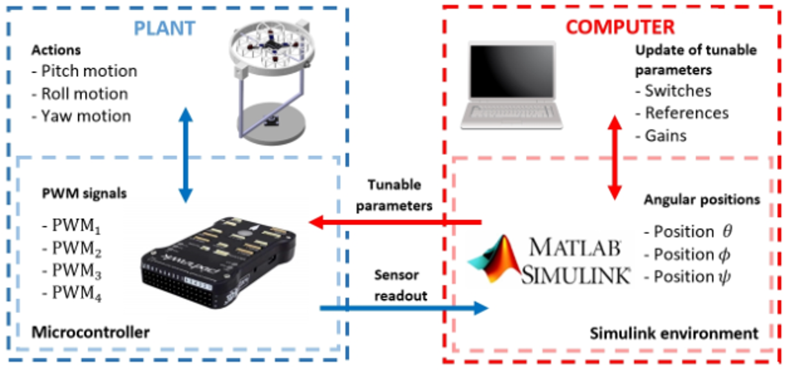

About Me
Greetings! I'm a passionate technology enthusiast...
I'm currently exploring opportunities...
Continuing Education
- Completed data analytics coursework...
- Studying for IT certifications...
- Dedicated to lifelong learning...
- Participating in labs...
Hobbies
- DIY Projects: Enjoy creating...
- Gaming: A fan of immersive games...
- Creative Work: Love designing...
- Fitness: Staying active helps...
Projects


Project Maverick
Design of a cooling garment for construction workers. Developed in collaboration with UTRGV’s Engineering and Business colleges.
View Full DetailsProject One: Full Showcase
Overview
This project is a full-featured web app built with HTML, CSS, and JavaScript...
Tools Used
- HTML, CSS, JavaScript
- VS Code, GitHub
- Figma for design
Features
This app includes user authentication, a dashboard, responsive design, and more.
Code Structure
The project follows modular JS patterns and semantic HTML structure...
Challenges
Debugging async issues and optimizing for mobile responsiveness were major hurdles.
Solutions
Used Chrome DevTools for debugging and implemented media queries for responsiveness.
What I Learned
Deepened my understanding of JavaScript modules and accessibility best practices.
Future Improvements
Plan to add dark mode toggle and backend API integration.
Project Maverick: 3DOF Quadcopter Workbench
Welcome!
Welcome to Project Maverick! My name is Angel Rodriguez and I will be working on this project during the Spring and Fall 2025 semesters. The goal of this project is to design and develop a low-cost workbench to implement different control strategies for a 3 DoF UAV. I hope you enjoy this project as much as I did.
What Problem Are We Trying to Solve?
Existing quadcopter test stands are expensive and inaccessible to many universities. This limits hands-on learning opportunities for students. Our goal is to create a workbench where students can implement their own control strategies and get real experience with systems involving sensors, actuators, and embedded controllers.
Important to Know
Before diving into our solution, it's important to understand a few key concepts behind quadcopter control and test stand design.
- 3 Degrees of Freedom (3DOF): Our system is designed to allow motion in roll, pitch, and yaw while restricting translational movement.
- PID Controllers: Control is achieved using a PID algorithm modeled in Simulink and deployed in real-time.
- Sensor Feedback Loop: The Arduino collects data from an IMU and sends it to the controller in Simulink.
- ESC & PWM Control: The Arduino Mega determines motor speeds via PWM signals to the ESCs.
- Educational Focus: The platform is modular, safe, and low-cost, with mostly 3D printed components to support classroom use.
Why This Problem Is Important
Students often struggle to bridge the gap between theory and practice in control systems courses. This project gives them hands-on access to tune, test, and validate control strategies on a real system.
Traditional drones are often closed-source, expensive, or too risky to use in classrooms. Our design addresses all of these barriers by focusing on safety, openness, and affordability.
According to the National Training Laboratories, students retain 75% of what they do — compared to only 10% of what they read. Research also shows improved outcomes when control theory is applied in lab-based environments (IEEE, 2017).
Our Proposed Solution
We developed a low-cost, open-source quadcopter test stand that allows motion in three rotational degrees of freedom. It is ideal for teaching students about control systems using real hardware and real-time models.
- 3DOF Stand: Allows visible and measurable rotational movement for roll, pitch, and yaw.
- Simulink PID Control: Control logic is modeled and simulated in MATLAB/Simulink.
- Arduino Mega: Acts as the onboard controller handling PWM and sensor communication.
- 3D Printed Frame: Most parts are designed in CAD and printed to reduce cost and allow flexibility.
This system gives students an intuitive, hands-on way to see how control theory operates in real time — from model to motion.
System Diagram
Figure: Block diagram showing data flow between Simulink, Arduino, sensors, and motors.
Prototyping
To validate our design before manufacturing, I created a 3D model of the 3DOF quadcopter stand using CAD software. This allowed me to test for fit, mechanical clearance, and mounting points. The 3D model will be used to 3D print key components such as motor brackets, arm mounts, and sensor enclosure. These parts will be assembled into a physical prototype to evaluate stability, weight distribution, and accessibility of electrical connections.
This hands-on prototype stage helped identify practical challenges like wire routing, center-of-mass offset, and sensor noise due to vibrations. It will also give us the opportunity to test motor response and refine our Simulink controller with a physical system in the loop.
Figure: Assembled prototype of the 3DOF quadcopter stand with 3D printed components.
Video: Demonstration of the prototype in operation.
Final Product
This project is still under development and will be updated as it goes along with intent to finish the project before the end of the Fall 2025 semester
Future Work
The Maverick project is still far from being completed as of right now. In the coming future, I plan on receiving the electrical components and begin assembling the prototype. Additionally, I will need to research more about control systems and how to integrate equations into my controller.
Acknowledgements
Sponsor: Dr. Erik Chumacero.
Instructors: Dr. Jose Taha.
Special thanks to the UTRGV Mechanical Engineering Department and the control systems lab support staff.